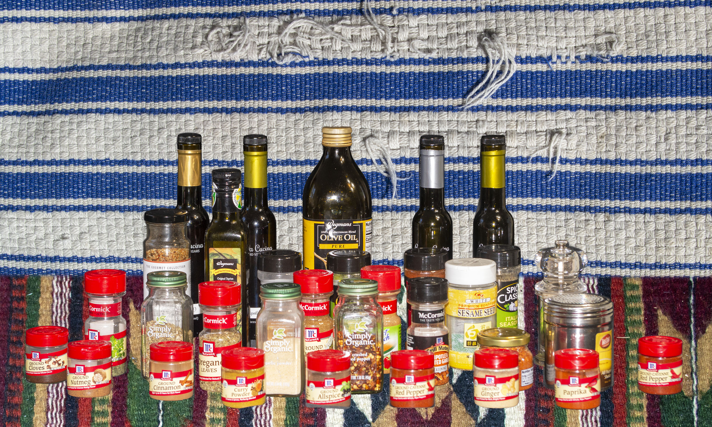

One of the most enjoyable cities to visit in Kitchen is Spice City.
This city is located in a temperate location perfect for growing many spices, and the areas surrounding it are largely made up of spice fields.
The cuisine here is unimaginably good with flavors for all different kinds of dishes.
They’re particularly well known for their spicy food, and visitors are welcomed to take spice challenges in which they eat progressively more spicy food.
I had the good fortune to visit during a festival weekend, and spent the whole time dancing and celebrating in the street with the locals.
I took this photograph as I was leaving. I hope to return often.